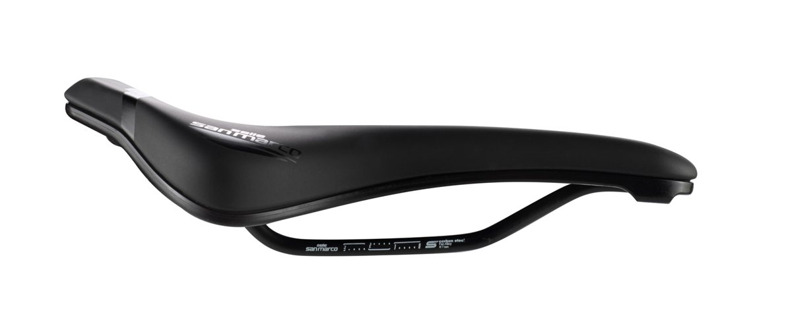
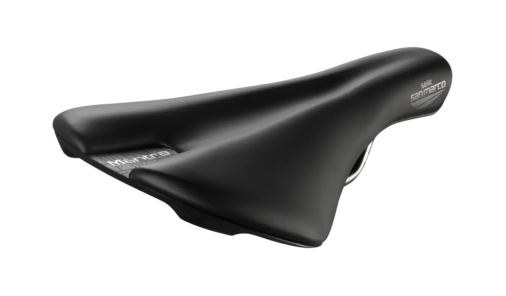
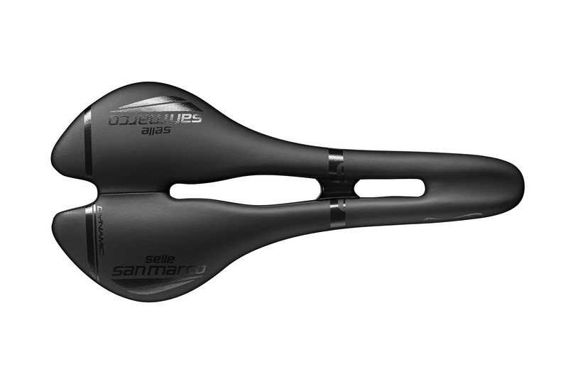
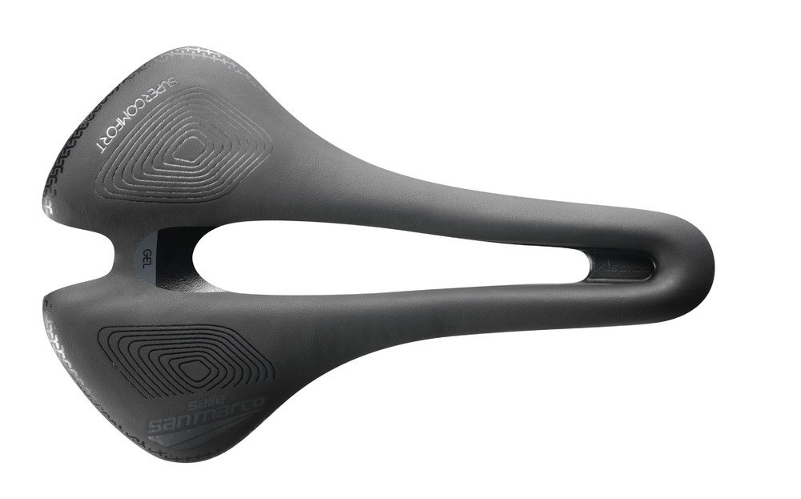
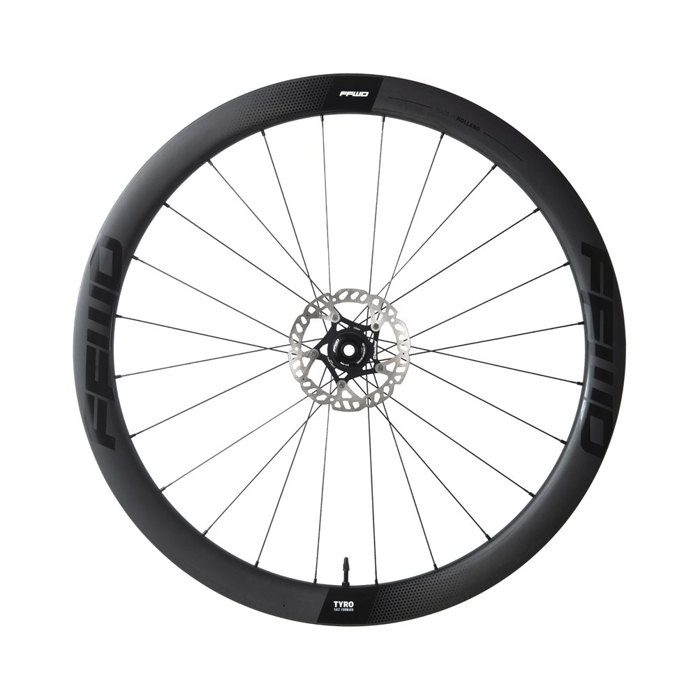

Try before you buy
Don't leave your choice to chance. Pick a saddle, bag or wheels, book them online and test them on your own bike in real riding.
How it works
- ChooseBrowse the products below or come for advice. We talk about your current saddle and what you expect from the new one.
- TestYou take the product for a week and ride it on your own bike. For saddles you leave a CZK 1,000 cash deposit and we write up a short loan record.
- DecideAfter the test you stop by and we talk about how it felt. The deposit is either deducted from a new purchase or returned.
Testing saddles is completely non-binding and free of charge.

Stealth TSA 1.1
Triathlon and time-trial saddle with a padded nose.

Falcon 142 mm
Flat profile for flexible riders with a stable position.

Volture 142 mm
Classic saddle without a cut-out.

Stealth Offroad 142 mm
Off-road saddle with optimised damping.

Shortfit 2.0
Enlarged opening and a wider nose. Popular with women too.

Ground
Versatile MTB and gravel saddle.

Mantra
Delta shape and a wide flat nose. Great for women too.

Aspide Open-Fit
Road saddle with a long narrow nose for climbers.

Aspide Short
Larger opening, flat character and a narrow nose.
Bikepacking set
Light and durable bags for trips and expeditions.

Tyro 2.0
Durable carbon wheels for road and light gravel.
Saddle comparison
| Saddle | Use | Versions / size | Cut-out / shape | Rails |
|---|---|---|---|---|
| PRO Stealth TSA 1.1 | Triathlon | 255 × 132 mm | — | carbon |
| PRO Falcon 142 mm | Road | 142 mm | — | CrMo |
| PRO Volture 142 mm | Road | 142 mm | none | CrMo |
| PRO Stealth Offroad 142 mm | MTB, Gravel | 255 × 142 mm | — | stainless steel |
| Selle San Marco Shortfit 2.0 | Road, MTB, Gravel, suitable for women | Narrow Supercomfort, Wide Supercomfort, Narrow Racing, Wide Racing | enlarged opening | — |
| Selle San Marco Ground | MTB, Gravel | Narrow, Wide | — | — |
| Selle San Marco Mantra | Road, Gravel, suitable for women | — | delta | — |
| Selle San Marco Aspide Open-Fit | Road | Narrow, Wide | standard | — |
| Selle San Marco Aspide Short | Road | Narrow Comfort, Wide Comfort, Narrow Racing, Wide Racing | larger opening | — |